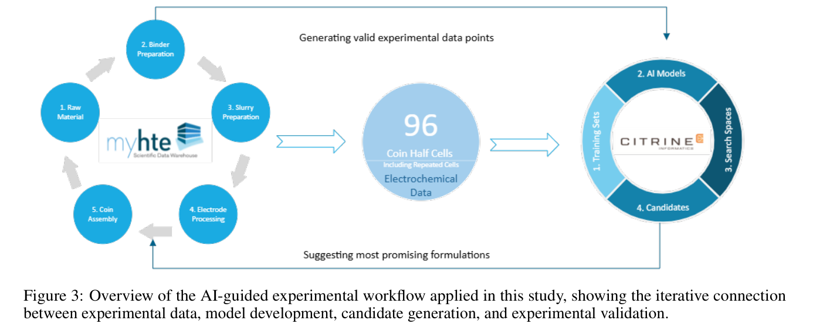
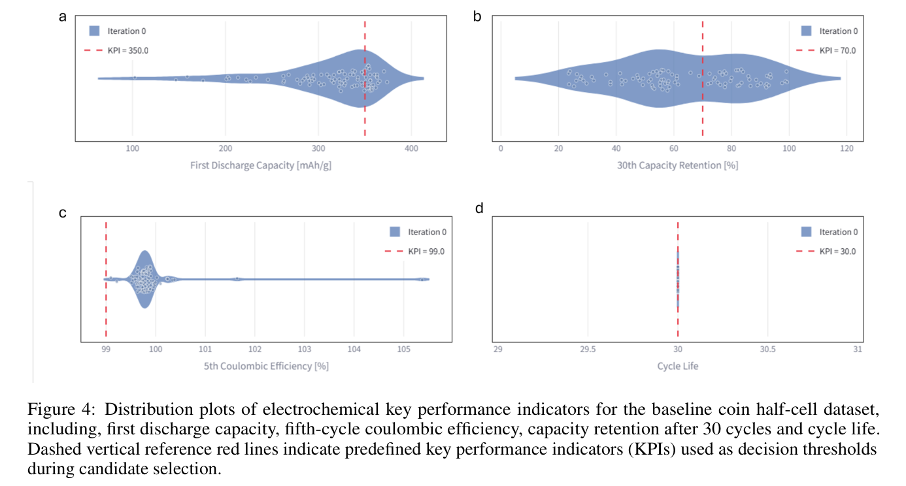
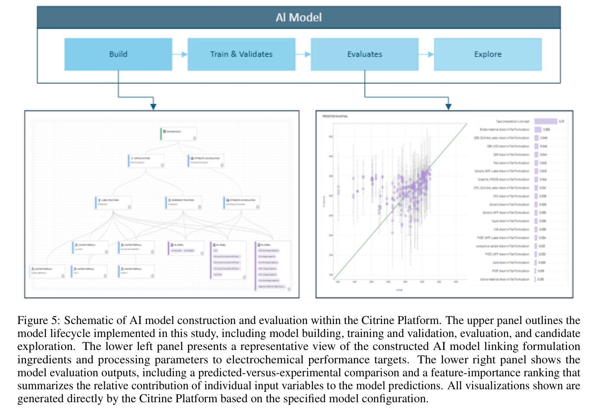
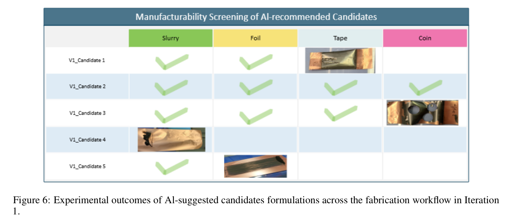
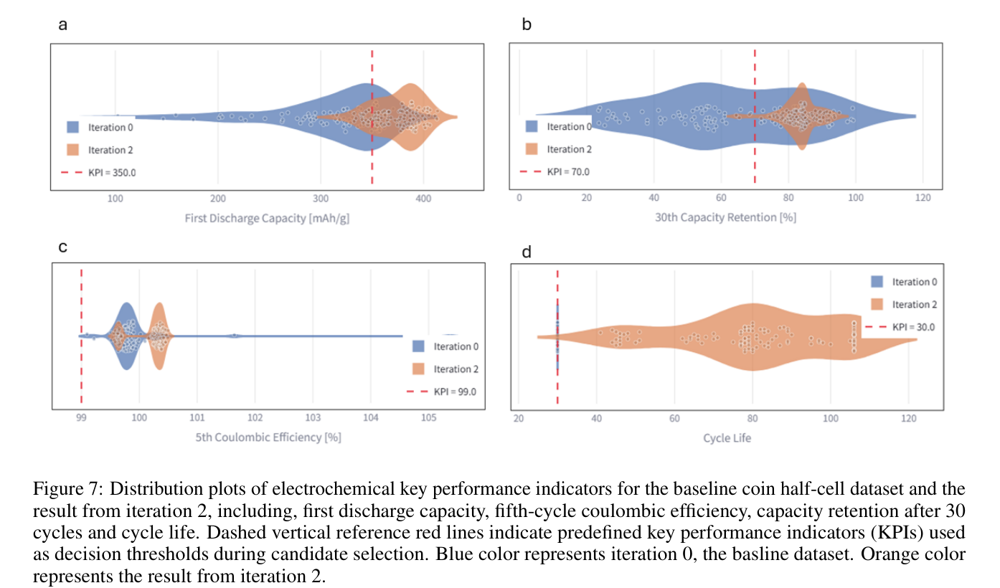
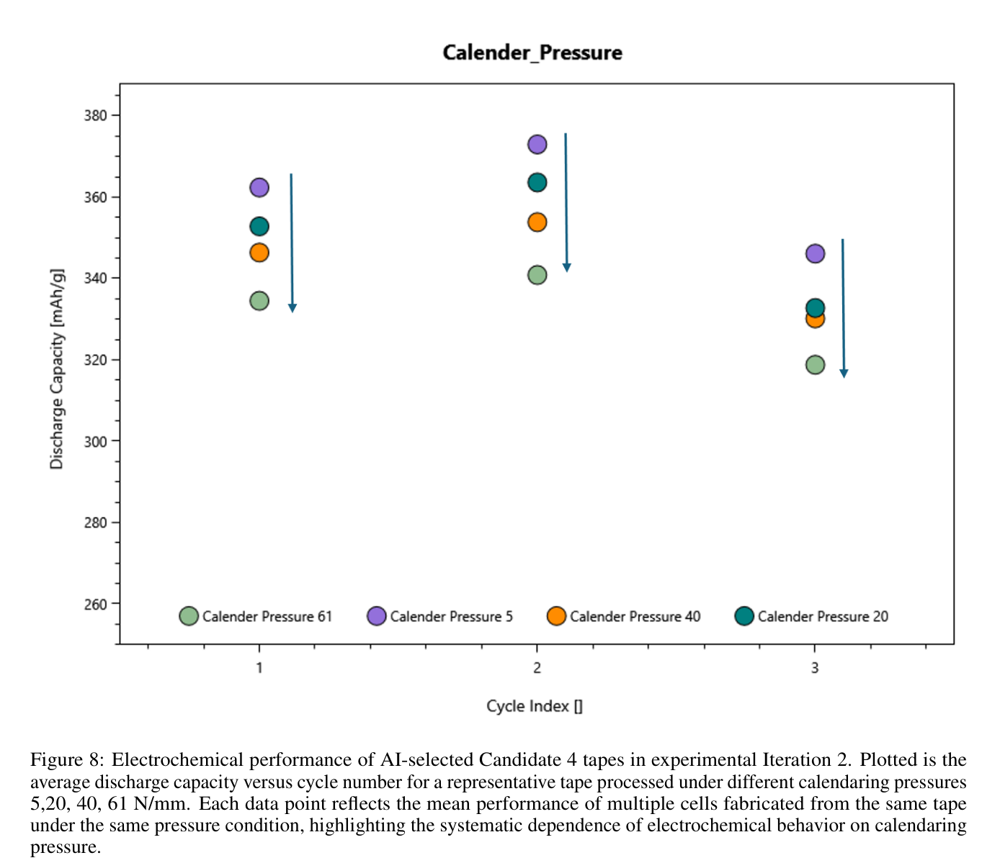
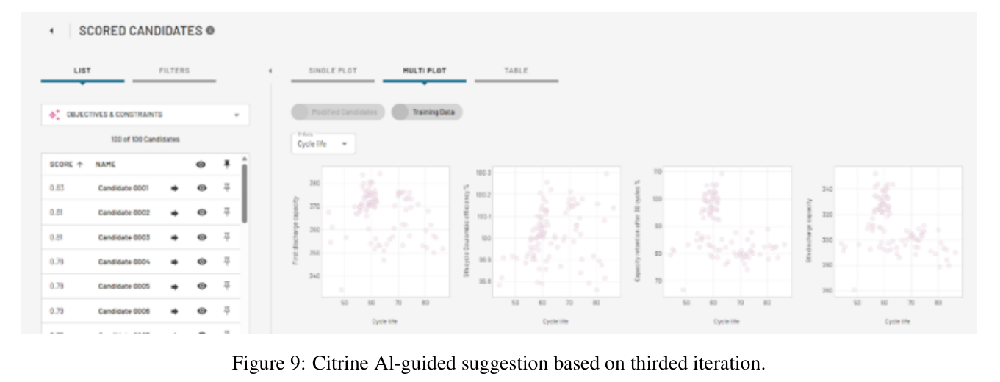
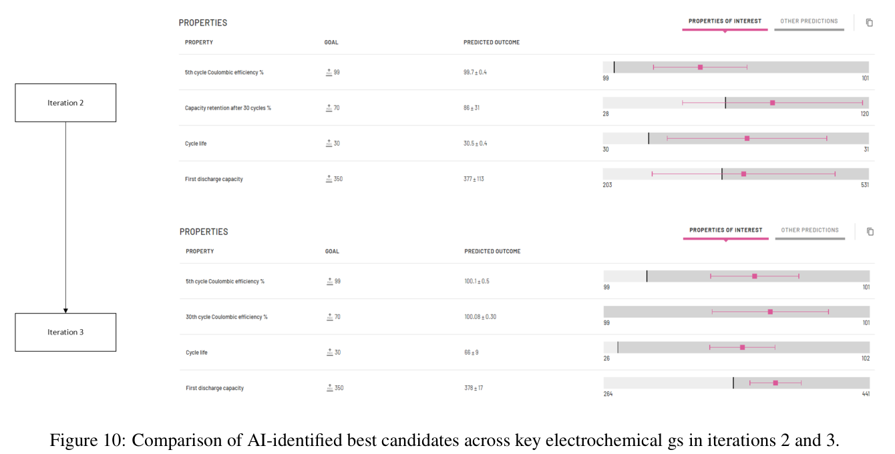

全文翻译
前言与摘要
Qian Du1, Mark M. Sullivan2, James E. Saal2, Florian Huber1
1 hte GmbH，海德堡，德国
2 Citrine Informatics，雷德伍德城，加利福尼亚州，美国
摘要
本研究提出了一种迭代式AI引导工作流程，通过提高配方可行性和工艺稳健性来加速石墨基负极开发。我们利用Citrine平台实现了基于AI/ML引导的多目标逆向设计的序贯学习，用于负极优化。从一个嘈杂且不完整的数据集出发，Citrine平台生成了早期代理模型，尽管预测确定性较低，但这些模型揭示了缺失的工艺约束。通过迭代添加可行性标签和边界条件失败信息，工作流程迅速收敛至可制造且性能更高的配方。制造可靠性从频繁的工艺失败提升至100%的成功电芯生产率，而放电量≥350 mAh g⁻¹的电芯比例从28.4%增加至84.8%，容量保持率从42.1%上升至97.3%。这些结果表明，结构化的反馈驱动型AI工作流程能够将不完美的工业数据转化为可操作的指导，从而实现电池电极制造的更快、更可重复的优化。
关键词
石墨 · 负极配方 · 锂离子电池 · AI支持研究 · 方法评估
引言
电池技术是现代能源系统的基石，支撑着电动汽车的推广、可再生能源的整合以及便携式电子设备的广泛应用。在各类电池技术中，锂离子电池（LIBs）凭借其高能量密度、良好的效率以及成熟的商业化水平，已成为主导方案。1 随着全球能源需求持续增长以及脱碳目标日益严格，进一步提升电池性能、安全性和可持续性仍然至关重要。2 应对这些挑战需要持续创新，同时需要对电池材料、配方和制造工艺建立更深入、更系统化的认识。3 因此，加速电池研发不再是可选项，而是技术进步和环境影响缓解的先决条件。1
传统电池研究工作流程通常依赖序贯实验法，即在保持其他变量不变的情况下逐个改变单一变量。3–5 尽管这种方法能够实现可控的假设检验，但将其应用于电池电极等复杂多参数系统时存在固有局限。成分、工艺与微观结构之间的相互作用往往是非线性的且相互耦合，这使得识别主要性能驱动因素或在小范围实验窗口之外进行推论变得困难。因此，在此类范式下取得的进展通常是渐进式的。3,4
为克服这些局限，两种方法学进展在电池研究中获得了越来越多的关注：高通量实验（HTE）和人工智能/机器学习（AI/ML）。6–9 HTE能够以规模化方式并行、可重复地产生实验数据，显著提高实验通量，同时降低每个数据点的材料和时间消耗。与此同时，材料信息学平台中的AI/ML提供了从大规模复杂数据集中提取工艺-结构-性能关系、探索高维设计空间以及以自适应、数据驱动的方式指导实验决策的能力。4,7,8 通过用可处理的代理模型表示复杂物理系统，该方法能够以更高的效率和可扩展性对关键性能指标进行系统化预测和优化。当HTE与AI/ML相结合时，能够推动电池研究工作流程实现根本性转变——从线性、人工指导的实验转向闭环、反馈丰富且日益自主的研究策略。10
在这些方法中，序贯学习（SL）（亦称主动学习）为高维设计空间中的迭代和数据高效优化提供了特别有效的策略。本研究中，我们采用了基于"具有不确定性估计的序贯学习随机森林"（FUELS）框架11的序贯学习，并借助Citrine平台实施。FUELS框架基于随机森林决策树集成12,13，并通过无穷小刀切法14纳入不确定性估计，使在有限且有噪声的数据条件下进行知情决策成为可能。研究表明，该框架能够以相当的理论性能、更高的计算效率识别高性能材料，优于贝叶斯优化方法；在多种材料系统中，其表现也显著优于随机搜索基准。11,15–20
序贯学习过程是迭代的，包含以下步骤：（1）训练机器学习模型以预测相关性能并给出相应不确定性；（2）使用适当的选择策略（获取函数）识别有前景的候选方案；（3）通过实验和/或模拟评估所选候选方案；（4）将结果纳入数据集并重新训练模型。这些步骤重复进行，直至识别出一种或多种高性能材料或达成优化目标。
在此背景下，石墨基负极配方代表了一个特别具挑战性和高维的设计空间。电化学性能受活性材料、非活性组分与电极制备参数之间耦合相互作用的支配，导致大量权衡关系的存在，而通过传统实验方法在组合层面难以处理。8,10,21 这种复杂性使负极配方优化非常适合AI/ML指导的方法。本研究中，我们应用Citrine平台指导石墨基负极配方，利用其识别潜在规律并生成数据驱动实验建议的能力。
本工作的目标是分享在电池材料研究中实施AI赋能工作流程的实践经验，以负极配方优化作为一个具有工业相关性的代表性案例。本研究目前侧重于AI指导的实验，未来工作将探索AI与高通量实验平台的更紧密整合，以进一步加速创新。
实验设计
本研究的目标是借助AI引导的实验设计方法，系统性地探索石墨基负极的配方空间。我们通过综合考虑组分变量和工艺参数，致力于阐明配方与制造选择如何影响电极层面的电化学性能，并识别通过数据驱动优化实现性能提升的机会。
所定义的配方空间涵盖了一系列广泛且经审慎选择的变量，以确保数据具有足够的丰富度以支撑AI/ML建模。如图1所示，这些变量包括粘结剂类型、溶剂类型、固体含量，以及一系列工艺参数，如混合机类型、混合功率、混合时间、压延压力和其他制备条件。这些参数的选择旨在捕捉配方-工艺之间的相互作用及其对关键电极性能指标的直接影响。

在研究的初始阶段，我们从先前针对石墨负极系统的研究中构建了基线数据集。详细的实验描述见第5节。该数据集包含12种不同的浆料配方，每种配方都代表了组分和工艺参数的独特组合。如图2所示，本研究中制备的每个扣式半电池均可追溯至一条明确的材料发展路径，涵盖原材料、粘结剂制备、浆料配方、电极加工和最终电池组装。从这些浆料出发，我们共制备了96个扣式半电池，其中包括针对部分配方制备的重复电池，并对其进行了电化学测试。由此产生的数据集成为后续AI驱动分析的基础。

对于每个数据点，我们使用HTE实验室信息管理系统（LIMS）系统性地记录和管理从原材料规格到电极制备及电池组装的全流程元数据。这确保了数据的安全存储、完全可追溯性，以及通过myHTE实验室软件环境实现的一致性文档记录。为实现公平且有意义的性能比较，所有扣式电池均采用标准化的电化学测试协议进行评估：先进行两个0.1C的化成循环，随后进行两个0.2C循环，再进行26个0.3333C循环。我们提取了关键绩效指标（KPI），包括循环寿命、初始放电容量、第5圈的库仑效率以及第30圈的放电容量，以构建用于AI模型训练的统一基线数据集。
在此阶段之前，所有实验活动和数据处理均独立于Citrine平台进行。整理好的数据集随后被上传至Citrine平台，并在该平台上执行了如图3所示的完整AI引导工作流程。该工作流程包括：按照Citrine提供的标准化Excel模板对数据集进行格式化，随后将其导入Citrine平台以生成初始训练集；基于该训练集构建定制化的AI/ML模型；由领域专家科学家定义搜索空间，以覆盖逆向设计引导优化工作流程所探索的高维参数范围；在纳入量化不确定性的前提下，将候选实验的性能与用户定义的目标和约束条件下的预测性能进行排序比较。
迭代式AI引导实验
本节介绍应用于石墨基负极配方优化的迭代式AI引导实验工作流程。我们在此重点展示序贯学习的过程，而非单一成功优化结果，包括失败的实验、数据重构、约束细化以及模型与实验的协同演化。这反映了早期材料开发的实际情况：学习效率和知识编码与绝对性能提升同样重要。

第0次迭代：基线建模与诊断评估
与AI平台的首次交互始于通过完整的建模周期处理基线数据集（如图3所示），包括：(i) 训练数据集准备，(ii) AI模型训练，(iii) 配方与工艺搜索空间定义，以及(iv) 候选配方生成与排序（整个四步过程约需30至60分钟）。
基线数据集源自先前以粘结剂为重点的研究，在所有电化学关键绩效指标上表现出显著差异，包括放电容量、库仑效率和循环稳定性。如图4所示，绝对性能和电池间重复性均较差。重要的是，该数据集有意保留，未经过人工筛选或排除低质量数据点。本阶段的目标不是最大化预测精度，而是评估AI框架如何解读和应对现实的、有噪声的实验起点——这种情况在早期配方开发或技术转移场景中经常遇到。

尽管数据质量有限，AI模型仍能够推断出配方变量（如粘结剂类型、溶剂组成和固含量）与电化学性能之间的初步关系（如图5所示）。所得到的候选配方展现出约0.16量级的改进可能性(LoI)分数11。改进可能性是一个代表性指标，可理解为实现所有目标指标和约束条件的概率。任何正的改进可能性值都意味着在感兴趣的方向上改进材料和模型预测是可行的，分数越接近1表示实现所有目标的的可能性越高。该单一指标综合考虑了所有目标、约束条件、这些指标预测的相关不确定性以及用户指定的性能指标基准。
该结果表明，鉴于当前数据集的高不确定性和广泛定义的搜索空间，在这一阶段识别出能同时满足所有四个关键绩效指标(KPI)并带来显著改进的配方的概率较低。

在初始建模阶段（第0次迭代），工作流程输出主要被解读为诊断指标而非可靠预测。高不确定性反映了数据覆盖的空白、领域知识在模型架构和特征工程中的缺失，以及配方空间和约束定义方式的局限性。因此，使用初步模型的第一次迭代有助于确定在哪些地方需要额外的描述符、领域知识或更精细的边界，以更好地代表石墨负极系统。这一阶段也反映了早期研发项目的常见现实：工作往往从非理想或不完整的数据集开始。本阶段的目的不是提供最优配方，而是建立一个结构化的基线，使实验学习能够在此基础上推进。因此，关键目标不是将模型准确性作为成功的最终衡量标准，而是利用预测结果和量化不确定性来确定哪些新实验将提供最具信息量的数据。
第1次迭代：首次AI建议实验与失败驱动学习
根据初始AI建议，我们手动选择了五个候选配方进行实验验证（表1）。这一选择过程涉及专家干预，以领域知识的形式编码到平台的搜索空间中，以排除不可行的配方，例如实践中无法实现的粘结剂溶液浓度（如过高无法形成均匀浆料的CMC浓度）。所选候选配方经过合成和实验评估，并施加了额外的压延压力以增加数据密度。
表1 第1次迭代评估的AI建议候选配方组成
Table 1 AI-Recommended Candidate Formulation Composition for Iteration 1
| 配方 | C45 | 石墨 | SBR | CMC | 蒸馏水 | 乙醇 | 固含量比 |
|---|---|---|---|---|---|---|---|
| Formulation | C45 | Graphite | SBR | CMC | Distilled_water | Ethanol | Solid ratio |
| V1_Candidate 1 | 1.22 | 98.30 | 0.00 | 0.48 | 100.00 | 0.00 | 0.57 |
| V1_Candidate 2 | 1.36 | 95.15 | 3.49 | 0.00 | 100.00 | 0.00 | 0.50 |
| V1_Candidate 3 | 11.68 | 83.81 | 4.49 | 0.00 | 0.00 | 100.00 | 0.61 |
| V1_Candidate 4 | 0.80 | 95.15 | 3.97 | 0.08 | 50.02 | 49.98 | 0.40 |
| V1_Candidate 5 | 0.60 | 95.38 | 4.02 | 0.04 | 50.10 | 49.90 | 0.40 |
如图6所示，五个候选材料中有四个在制造过程的不同阶段失败，导致这些材料几乎没有可用的数据。这一迭代中观察到的异常高失败率表明，用于预测的基线数据对实际制造约束的代表性不足。

第2次迭代：数据结构增强与约束细化
针对第1次迭代中获得的洞察，数据集和建模框架进行了重大修订。引入了新的工艺级标签，以明确捕获实验可行性和质量，包括浆料均匀性、涂层成功、压延完整性和整体制造通过/失败状态指标（图1）。这些标签在传统电池研究论文中很少报道，但它们编码了决定实验成功的关键实践知识。
在数据集重构之后，AI工作流程（图3）使用细化的搜索空间约束再次执行，包括粘结剂溶液浓度和固液比的明确限制。关键绩效指标(KPI)集合从六个指标简化至四个核心指标，以降低这一学习阶段的目标复杂度（如图4所示）。
因此，本次第2次迭代中新生成的候选配方展现出新的分数，最高可达约0.33。尽管预测不确定性仍然较高——反映了仍然有限的数据集规模——但候选配方在加工方面明显更加现实，五位候选配方如表2所示被选中进行实验验证。值得注意的是，当底层目标和约束条件不同且统计ML模型随着额外训练数据的更新而变化时，LoI分数不能直接比较。在后续的实验迭代中，当关键绩效指标和约束定义保持固定时，LoI值可以进行有意义的比较，并用于评估候选配方之间的相对改进。
表2 第2次迭代评估的AI建议候选配方组成
Table 2 AI-Recommended Candidate Formulation Composition for Iteration 2
| 配方 | C45 | 石墨 | SBR | CMC | 蒸馏水 | 乙醇 | 固含量比 |
|---|---|---|---|---|---|---|---|
| Formulation | C45 | Graphite | SBR | CMC | Distilled_water | Ethanol | Solid ratio |
| V2_Candidate 1 | 1.164 | 93.76 | 3.039 | 2.037 | 80.54 | 19.46 | 0.30 |
| V2_Candidate 2 | 1.578 | 93.367 | 3.026 | 2.028 | 88.47 | 11.53 | 0.30 |
| V2_Candidate 3 | 4.561 | 91.21 | 2.578 | 1.646 | 100.0 | 0.00 | 0.50 |
| V2_Candidate 4 | 1.024 | 91.88 | 4.200 | 2.890 | 100.0 | 0.00 | 0.30 |
| V2_Candidate 5 | 7.188 | 86.68 | 3.594 | 2.537 | 68.92 | 31.079 | 0.46 |
在第二次实验迭代中，所有AI选择的配方都成功制成纽扣电池，没有工艺失败。这本身就是一个重要里程碑，表明以可行性标签和细化约束形式纳入专家领域知识有效地将模型建议与实验室实际相结合。
电化学测试表明，与基线数据集和早期迭代相比，性能和重复性都有明显改善（如图7所示）。经过两轮主动学习/机器学习反馈循环后，满足定义的关键绩效指标(KPI)的候选比例大幅提高：84.8%的电池首次放电容量达到350 mAh g−1，而基线数据集中仅有28.4%（如图7a）。容量保持性能同样提高；最初，42.1%的基线材料超过基线关键绩效指标表现，而第2次迭代候选配方中有97.3%超过关键绩效指标基线（如图7b）。相比之下，循环寿命和第五圈库仑效率在这一阶段贡献的诊断价值较低，因为它们的基线值已经较高且变化有限。

图8呈现了V2_candidates 5在不同压延压力下的电化学结果。如图8所示，对在同一 Tape 上制作的复制电池的电化学性能进行平均，能够更清晰地评估压延压力的影响。这一观察突出了生成高质量和可重复数据集的重要性，这对于可靠地分析各个工艺参数的影响并指导后续研究方向至关重要。值得注意的是，压延压力的影响——之前通过AI模型在早期迭代中隐式推断——在这一迭代中变得可通过实验观察。模型引导的洞察与实验结果之间的一致性为所学习的工艺-结构-性质关系提供了支持性证据。

第3次迭代：向可行和可重复配方的收敛
在纳入第2次迭代新生成的实验数据后，AI引导的工作流程重新执行，导致改进可能性(LoI)分数显著提高至0.83，而前一次迭代具有相同性能目标和约束的LoI分数约为0.33（如图9所示）。关键的是，这种改进不仅限于数值优化指标，还通过实验可重复的电化学行为和明确的工艺依赖趋势得以实现。与早期迭代相比（如图10所示），第3次迭代生成的候选配方能够满足所有定义的关键绩效指标(KPI)，尽管存在残余不确定性，提供了清晰而稳健的优化成功信号。因此，候选选择变得明显更加直接，并得到更多定量证据的支持。在这一阶段，模型输出得到了通过高效AI/ML引导的候选样本选择收集的更强的实验基础的支持，使我们对推断的工艺-性能关系更有信心。


总体而言，这一进展说明了迭代式AI/ML引导的、专家驱动的数据富集如何将直觉驱动或简单统计的实验设计方法转变为更可靠、系统化和信息丰富 framework，用于高效改进理解和优化电池制造工艺。
材料与方法
4.1 阳极浆料制备
我们采用MSE Supplies提供的天然石墨作为活性物质，C45导电碳作为导电添加剂。电池级羧甲基纤维素钠（Na-CMC）和Licity™2698 XF（含水量50%的SBR）作为可选粘结剂材料。蒸馏水和乙醇作为可选溶剂。每种浆料配方均包含活性物质、导电碳、至少一种粘结剂和一种溶剂。各组分配比遵循由Citrine平台生成的候选配方。
根据是否含有SBR，采用两种不同的混合工艺。对于仅使用Na-CMC作为粘结剂的配方，我们将所有组分在Thinky ARE-250行星式混合器中以2000 rpm混合20分钟。对于含有SBR的配方，先将除SBR以外的所有原料在2000 rpm下混合15分钟，随后加入所需量的Licity™2698 XF，再以500 rpm混合5分钟以确保SBR粘结剂充分融入。
4.2 电极制备
我们使用Erichsen Coat Master将制备好的阳极浆料涂覆到铜箔上，刮刀间隙固定为60 µm，涂覆速度为5 mm s⁻¹（正向）。涂覆后的铜箔在Binder VDL-53烘箱中于70 °C干燥12小时以去除溶剂。
干燥后，电极在Citrine平台设定的不同线压条件下进行压延。压延使用Sumet CA 5/250压延机在25 °C下进行，前向进料速度为0.5 m min⁻¹。压延后，使用Nogami手动冲片机将电极冲压成15 mm圆片。圆片被转移至充满氩气的手套箱（O₂ < 0.1 ppm，H₂O < 0.1 ppm）中，在120 °C下真空干燥12小时后再进行电池组装。
4.3 纽扣电池组装
所有纽扣电池组装步骤均在充满氩气的手套箱内进行。我们使用制备好的石墨电极作为工作电极，锂金属片作为对电极，GF/D玻璃纤维隔膜置于两电极之间。每个电池注入100 µL LP30电解液（1 M LiPF₆ in EC/DMC，1:1 v/v）以确保充分浸润。
电池使用Hohsen HSACC扣式电池封口机在可控压力条件下进行密封。组装后的电池在电化学测试前静置12小时，以确保电解液充分渗透。
4.4 纽扣电池测试
电化学测量在Arbin充放电测试仪上进行。电池在0.005 V至1.50 V（相对于Li/Li⁺）的电压范围内进行循环。化成协议包括两个C/10循环，随后两个C/5循环，再进行26个C/3循环。对于不属于基准数据集的电池，在初始的26个C/3循环后不终止循环。
4.5 Citrine平台概述
我们使用Citrine平台通过迭代闭环工作流程进行序贯学习引导的材料优化，该流程整合了数据管理、机器学习、设计空间定义和候选物筛选。实验和计算数据使用材料数据图形表达（GEMD）框架进行结构化，该框架将材料来源、加工历史、测量元数据和不确定性编码为适用于机器学习应用的基于图形的表示。候选材料和工艺条件使用成分感知、工艺感知和配方感知的描述符进行特征化，包括从化学计量学和特定领域工艺变量中得出的化学信息特征。预测模型使用Citrine平台的自动化机器学习框架构建，其中随机森林集成作为主要的代理模型，这是因为其对异质材料数据集的鲁棒性以及与不确定性量化的兼容性。模型不确定性使用基于刀切法的方差方法结合显式偏差校正进行估计，从而获得适用于序贯学习的校准异方差不确定性估计。设计空间使用领域知识进行约束，包括成分边界、混合物约束、可选成分和工艺变量限制，确保生成的候选物在物理上可实现且与实验相关。序贯学习迭代通过对约束设计空间进行采样、预测目标性质及相关不确定性、然后使用平衡探索与利用的获取函数（包括改进可能性）对候选物进行排序来执行。选定的候选物经过实验评估，得到的测量结果被迭代地纳入训练数据集，以完善后续模型预测并加速向最优材料性能的收敛。
结论
本案例研究表明，当人工智能引导的实验与结构化的高通量实验工作流程相结合时，即使在有限数据、复杂工艺参数和频繁实验失败等现实约束条件下，也能显著加速电池材料开发。早期迭代表明，人工智能与机器学习引导的优化能够揭示材料开发数据集中忽视可行性与工艺相关结果的常见做法所带来的负面影响。将实验失败视为有价值的信息而非应予丢弃的噪声，被证明至关重要。通过明确捕捉失败模式并纳入可行性约束，该工作流程确定了有意义的配方边界，使模型推荐与制造实际相吻合。
从定量角度看，迭代优化带来了显著收益。候选配方的改进可能性（LoI），一种代表实现目标伪概率的复合统计指标，在第二与第三次实验迭代之间从0.33以下提升至0.83，性能提升近三倍。制造可靠性从最初的工艺失败提高至所有人工智能建议候选的扣式电池100%成功制备。电化学性能同样取得进展，第三代电池表现出更高的首次放电容量、更优的库仑效率，以及基线数据集中未曾出现的可重复压延压力趋势。滚动更新验证表明，即使在数据匮乏的情况下，迭代学习也能系统地缩小模型不确定性并增强预测可靠性。
综合而言，这些结果表明，迭代的、数据富化的人工智能工作流程无需完美精度即可创造价值，它们需要的是结构、反馈和连续性。人工智能引导的实验能够基于当前数据状态和优化目标，有效且高效地涵盖从探索到利用的完整过程，最大化投入到实验中的专家资源效率。本工作最终提供了明确证据：搜索空间定义得越完善，模型就越精确、候选方案就越优、电池材料就越具可重复性和更高性能，为未来人工智能驱动的材料开发奠定了可扩展的基础。
展望
本研究的结果指向一个极具前景的未来：人工智能引导的实验将成为加速电池创新的核心驱动力。本研究取得的迭代收益，可行性提升、工艺-性能关系更清晰、候选筛选日益有效以及最终实验效果改善，表明系统性遵循人工智能生成的推荐意见可以解锁可观的性能提升，尤其是在与持续的高通量实验相结合时。
展望未来，通过更丰富的数据集和更高的自动化程度扩展该工作流程，将使人智能模型得以探索更广泛的配方和工艺空间、揭示隐藏的交互作用，并提出超越增量改进、真正达到新性能类别的候选方案。随着领域知识通过更精细的约束、更细致的失败模式和更完整的工艺元数据进一步嵌入模型，人工智能将能够开始揭示传统上需要大量手动实验才能获得的机理性见解。
随着实验与建模循环日益紧密地整合，更快的迭代周期、自动化的实验策划以及更自主的优化工作流程将成为可实现的目标。重要的是，本研究展示的方法论可广泛迁移至其他电极化学体系、电解质或完全不同的材料系统。通过持续优化，本工作建立的"人工智能-高通量实验"框架在缩短开发周期、减少无意义实验、支持发现真正顶级电池材料与技术方面具有强大潜力。
参考文献
参考文献
[1]McIlwaine, N., Foley, A.M., Morrow, D.J., Al Kez, D., Zhang, C., Lu, X., Best, R.J.: A state-of-the-art techno-economic review of distributed and embedded energy storage for energy systems. Energy 229, 120,461 (2021). doi:10.1016/j.energy.2021.120461分布式与嵌入式储能系统技术经济综述
[2]Yang, X., Zhang, H., Liu, Q., Jiang, G.: The li-ion battery industry and its challenges. Nature Reviews Chemistry 9, 497–498 (2025). doi:10.1038/s41570-025-00742-2锂离子电池产业及其挑战
[3]Drakopoulos, S.X., Gholamipour-Shirazi, A., MacDonald, P., Parini, R.C., Reynolds, C.D., Burnett, D.L., Pye, B., O'Regan, K.B., Wang, G., Whitehead, T.M., Conduit, G.J., Cazacu, A., Kendrick, E.: Formulation and manufacturing optimization of lithium-ion graphite-based electrodes via machine learning. Cell Reports Physical Science 2(12), 100,683 (2021). doi:10.1016/j.xcrp.2021.100683基于机器学习优化锂离子石墨基电极配方与制造工艺
[4]Han, Z., Zhou, J., Lu, G., Piao, Z., Tao, S., Gao, R., Li, C., Zhang, X., Zhou, G.: Uncovering battery electrochemical mechanisms by artificial intelligence. National Science Review 12(11), nwaf442 (2025). doi:10.1093/nsr/nwaf442人工智能揭示电池电化学机理
[5]Duquesnoy, M., Lombardo, T., Chouchane, M., Primo, E.N., Franco, A.A.: Data-driven assessment of electrode calendering process by combining experimental results, in silico mesostructures generation and machine learning. Journal of Power Sources 480, 229,103 (2020). doi:10.1016/j.jpowsour.2020.229103结合实验结果计算微结构生成与机器学习的数据驱动电极压延工艺评估
[6]Ismail, M., Cabañero, M.A., Orive, J., Babulal, L.M., Garcia, J., Morant-Miñana, M.C., Dauvergne, J.L., Bonilla, F., Monterrubio, I., Carrasco, J., Saracibar, A., Reynaud, M.: Adel: an automated drop-cast electrode setup for high-throughput screening of battery materials. Digital Discovery 4, 943–953 (2025). doi:10.1039/D4DD00381KAdel：用于电池材料高通量筛选的自动滴铸电极装置
[7]Nwabara, U., Yang, K., Talekar, A., Bernales, V., González, J., Miller, S., Wu, J.: High throughput computational and experimental methods for accelerated electrochemical materials discovery. Journal of Materials Chemistry A 13(32) (2025). doi:10.1039/D5TA00331H加速电化学材料发现的高通量计算与实验方法
[8]Wang, Y.: Application-oriented design of machine learning paradigms for battery science. npj Computational Materials 11(1), 89 (2025). doi:10.1038/s41524-025-01575-9面向应用的电池科学机器学习范式设计
[9]Ng, M.F., Sun, Y., Seh, Z.W.: Machine learning-inspired battery material innovation. Energy Advances 2(4), 449–464 (2023). doi:10.1039/D3YA00040K机器学习启发的电池材料创新
[10]Benayad, A., Diddens, D., Heuer, A., Krishnamoorthy, A.N., Maiti, M., Le Cras, F., Legallais, M., Rahmanian, F., Shin, Y., Stein, H., Winter, M., Wölke, C., Yan, P., Cekic-Laskovic, I.: High-throughput experimentation and computational freeway lanes for accelerated battery electrolyte and interface development research. Advanced Energy Materials 12(17), 2102,678 (2022). doi:10.1002/aenm.202102678用于加速电池电解液与界面研究的高通量实验与计算通道
[11]Ling, J., Hutchinson, M., Antono, E., Paradiso, S., Meredig, B.: High-dimensional materials and process optimization using data-driven experimental design with well-calibrated uncertainty estimates. Integrating Materials and Manufacturing Innovation 6(3), 207–217 (2017). doi:10.1007/s40192-017-0096-4基于良好校准不确定性估计的数据驱动实验设计用于高维材料与工艺优化
[12]Ho, T.K.: The random subspace method for constructing decision forests. IEEE Transactions on Pattern Analysis and Machine Intelligence 20(8), 832–844 (1998). doi:10.1109/34.709601用于构建决策森林的随机子空间方法
[13]Breiman, L.: Random forests. Machine Learning 45, 5–32 (2001). doi:10.1023/A:1010933404324随机森林
[14]Wager, S., Hastie, T., Efron, B.: Confidence intervals for random forests: The jackknife and the infinitesimal jackknife. Journal of Machine Learning Research 15, 1625–1651 (2014)随机森林的置信区间：刀切法与无穷小刀切法
[15]Oliynyk, A.O., Antono, E., Sparks, T.D., Ghadbeigi, L., Gaultois, M.W., Meredig, B., Mar, A.: High-throughput machine-learning-driven synthesis of full-Heusler compounds. Chemistry of Materials 28(20), 7324–7331 (2016). doi:10.1021/acs.chemmater.6b02724高通量机器学习驱动的全Heusler化合物合成
[16]Fong, A.Y., Pellouchoud, L., Davidson, M., Walroth, R.C., Church, C., Tcareva, E., Wu, L., Peterson, K., Meredig, B., Tassone, C.J.: Utilization of machine learning to accelerate colloidal synthesis and discovery. The Journal of Chemical Physics 154(22), 224,201 (2021). doi:10.1063/5.0047385利用机器学习加速胶体合成与发现
[17]Antono, E., Matsuzawa, N.N., Ling, J., Saal, J.E., Arai, H., Sasago, M., Fujii, E.: Machine-learning guided quantum chemical and molecular dynamics calculations to design novel hole-conducting organic materials. The Journal of Physical Chemistry A 124(40), 8330–8340 (2020). doi:10.1021/acs.jpca.0c05769机器学习引导的量子化学与分子动力学计算用于设计新型空穴传导有机材料
[18]Meredig, B., Antono, E., Church, C., Hutchinson, M., Ling, J., Paradiso, S., Blaiszik, B., Foster, I., Gibbons, B., Hattrick-Simpers, J., Mehta, A., Ward, L.: Can machine learning identify the next high-temperature superconductor? Examining extrapolation performance for materials discovery. Molecular Systems Design & Engineering 3, 819–825 (2018). doi:10.1039/C8ME00012C机器学习能否识别下一代高温超导体？检验材料发现中的外推性能
[19]Sparks, T.D., Gaultois, M.W., Oliynyk, A., Brgoch, J., Meredig, B.: Data mining our way to the next generation of thermoelectrics. Scripta Materialia 111, 10–15 (2016). doi:10.1016/j.scriptamat.2015.04.026数据挖掘通往下一代热电材料
[20]Hegde, V.I., Peterson, M., Allec, S.I., Lu, X., Mahadevan, T., Nguyen, T., Kalahe, J., Oshiro, J., Seffens, R.J., Nickerson, E.K., Du, J., Riley, B.J., Vienna, J.D., Saal, J.E.: Towards informatics-driven design of nuclear waste forms. Digital Discovery 3(8), 1450–1466 (2024). doi:10.1039/D4DD00096J面向信息学驱动的核废料形式设计
[21]Zhao, T., Liu, X., Zeng, Y.: Accelerated development of battery materials leveraging artificial intelligence and automation. MRS Communications 15, 650–660 (2025). doi:10.1557/s43579-025-00761-6利用人工智能与自动化加速电池材料开发